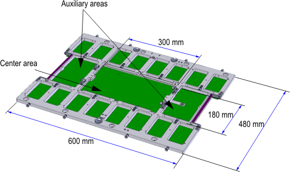
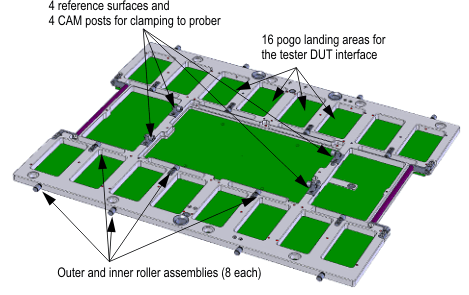
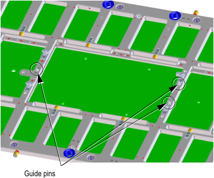
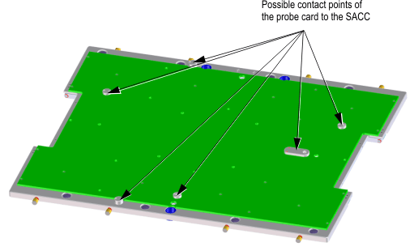
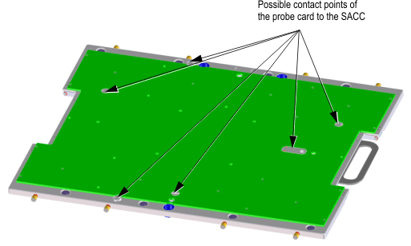

Direct-Probe probe card specifications
This topic gives general specifications for the Direct-Probe™ interface valid for all solutions. A universal stiffener design is used for all solutions.
This topic describes the interface for the digital and the mixed signal solution, which is the general basis for the RF solution. For details on the RF solution of SmarTest 7, see Direct-Probe PSRF probe card specifications.
Description |
Part number |
|---|---|
Large DUT board stiffener for RF, digital, and mixed signal |
|
Provided by prober vendor |
Direct-Probe probe card

Type |
Center [mm2] |
Aux (2) [mm2] |
Total [mm2] |
|---|---|---|---|
Digital and mixed signal |
48,413 |
16,789 |
81,991 |
RF-96 |
41,250 |
13,375 |
68,000 |
RF-48 |
46,790 |
13,375 |
73,540 |
Interfaces to SACC, DUT, and prober head plate

Position of the guide pins for general appliances (non-RF): delivery status

For more details, see Direct-Probe stiffener details.
The probe card interfaces to the semi-automatic card changer (SACC) by dedicated contact points.
- General probe card with footing of 8 mm height

- RF probe card with footing of 3.5 mm height

Functional changes
- Introduced in SmarTest 6.5.4